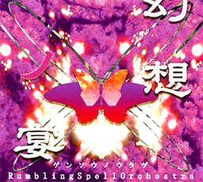

- Welcome to Touhou Wiki!
- Please register to edit. For assistance, check in with our Discord server or IRC channel.
Rumbling Spell Orchestra
Rumbling Spell Orchestra | |
|---|---|
|
 | |
| Developer | |
| Publisher | |
| Released |
2006 |
| Genre |
Dueling Card Game |
| Gameplay |
Two-player duel |
| Platforms |
Table top |
| Requirements |
40 cards plus 4 character cards |
Gensou no Utage -Rumbling Spell Orchestra- (幻想ノ宴-Rumbling Spell Orchestra-, lit. "Fantasy Feast") is a fan-made Touhou Project analog dueling card game, developed by Hinafuda.
Gameplay[edit]
- See Gameplay
This is a two-player turn-based dueling card game. Each player starts out by choosing four characters (repeats are allowed), and designates one as the leader. Your leader has an initial health point (体力-HP), border value (決死判定-BV) and evasion value (回避-EV), which will be used throughout the match, as well as some special abilities. Your starting spell point (SP) is zero. The other characters are to allow you access to other cards; the character requirements can be seen at the top of each card.
After you've picked your team, you get to choose 40 cards (duplicates are allowed up to a total of three) that comprise your deck. Obviously you will pick cards that you can actually use.
You will keep track of your HP and SP using counters. The game ends when one person's leader's HP drops to zero or when his or her deck has been depleted.
Additional information[edit]
| Legend | |
|---|---|
| Human | Reimu Hakurei, Marisa Kirisame, Sakuya Izayoi, Youmu Konpaku |
| Youkai | Yukari Yakumo, Alice Margatroid, Remilia Scarlet, Yuyuko Saigyouji |
| Scarlet | Flandre Scarlet, Patchouli Knowledge, Hong Meiling |
| Night | Kaguya Houraisan, Eirin Yagokoro, Reisen Udongein Inaba |
| Dream | Ran Yakumo, Chen, Prismriver Sisters |
| Oni | Fujiwara no Mokou, Keine Kamishirasawa, Suika Ibuki |
| Wind | Suwako Moriya, Kanako Yasaka, Sanae Kochiya |
| Mountain | Aya Shameimaru, Komachi Onozuka, Nitori Kawashiro |
| Heaven | Tenshi Hinanawi, Iku Nagae |
| Hell | Utsuho Reiuji, Rin Kaenbyou |
| Sensation | Koishi Komeiji, Satori Komeiji |
| Star | Byakuren Hijiri, Shou Toramaru |
| Mystery | Nue Houjuu, Kogasa Tatara |
| Commander | Nazrin, Minamitsu Murasa |
| God | Toyosatomimi no Miko, Mamizou Futatsuiwa |
| Essence | Cirno, Three Fairies |
| Heart | Mononobe no Futo, Ichirin Kumoi |
| Needle | Shinmyoumaru Sukuna, Hata no Kokoro, Mystia Lorelei |
| Wicked | Seiga Kaku, Seija Kijin |
| Misc | Team Supports, Team Events, General |
Chat[edit]
If you have questions or want to discuss the game, you can find experienced players and newcomers alike at the IRC channel #cardmaiden at irc.ppirc.net. If you don't have an IRC client then the web browser will suffice. https://webchat.ppirc.net/?channels=cardmaiden You can also join the Dulst Discord Channel where Rumbling Spell Orchestra is played at https://discord.gg/0q1HOSYDXzdkzDJK